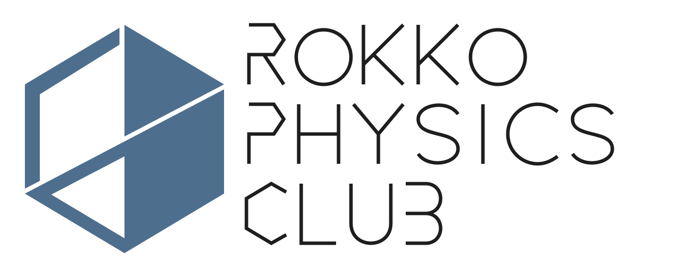

六甲学院物理部 2024年度文化祭ホームページへようこそ

六甲学院物理部2024年文化祭ホームページをご覧いただきありがとうございます。
去年に引き続き、文化祭に現地参加できない方にも物理部の活動を知っていただけるようWebサイトを制作しました。
今回からWebサイトのデザインを刷新したため、例年ご覧になっている方は少々違和感を感じるとは思いますが、より見やすくなるよう努力したので、昨年との違いを含めて楽しんでいただけると幸いです。
それでは、物理部の展示をお楽しみください。
物理部 三役
部誌
部誌はこちら↓
Works | 作品
文化祭で展示する作品などの記事を掲載している場所です。
rokkophysicsclub.github.io

学年表記について
| 期 | 学年 |
|---|---|
| 82 | 高校3年生 |
| 83 | 高校2年生 |
| 84 | 高校1年生 |
| 85 | 中学3年生 |
| 86 | 中学2年生 |
| 87 | 中学1年生 |
免責事項
- 本サイトは六甲学院物理部独自のものであって、六甲学院の公式ではありません。
- 本サイトに掲載されている情報の正確さには万全を期していますが、六甲学院物理部は閲覧者が本サイトの情報を用いて行う一切の行為について、一切の責任を負わないものとします。
- 六甲学院物理部は、閲覧者が本サイトを利用したことにより発生した閲覧者の損害及び閲覧者が第三者に与えた損害については、一切の責任を負わないものとします。
- 本サイトでは、Googleによるアクセス解析ツール「Googleアナリティクス」を使用しています。このGoogleアナリティクスはデータの収集のためにCookieを使用しています。このデータは匿名で収集されており、個人を特定するものではありません。 この機能はCookieを無効にすることで収集を拒否することが出来ますので、お使いのブラウザの設定をご確認ください。この規約に関しての詳細はGoogleアナリティクスサービス利用規約のページやGoogleポリシーと規約ページをご覧ください。